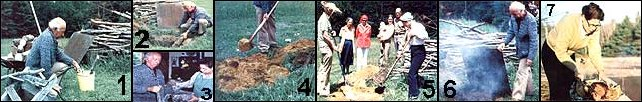

PHOTOS BY THE AUTHOR
[1] Aspen logs are soaked . . . [2] and added to the fire to give the meal a smoky flavor. [3] Each individual cut of meat is wrapped securely in its own grocery sack, then swathed in a double layer of wet newspaper. [4] After the pit is covered, it's further insulated with a layer of subsoil. [5] As a group of hungry neighbors watch, the author and his wife sweep the dirt from the hole. [6] Dinner smells wonderfully good . . . [7] and here it is! Come 'n' get it while it's steamin' hot, all you barbecue lovers!